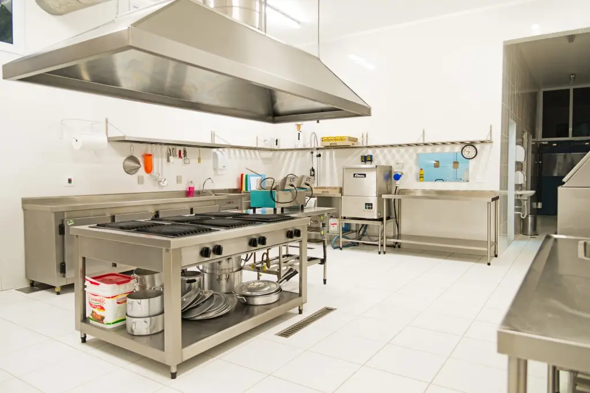
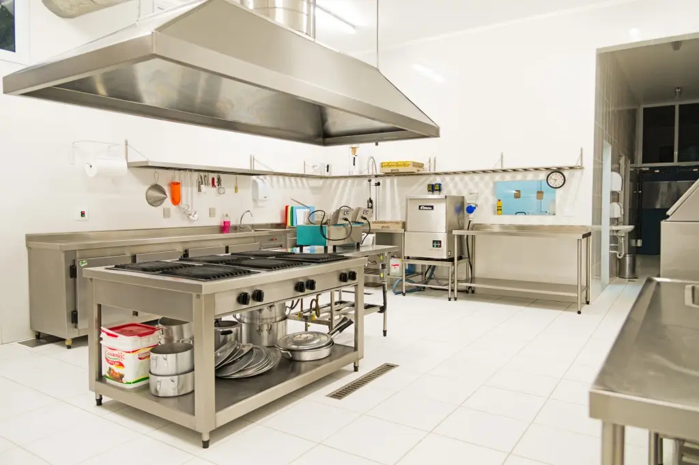

Quem Somos – Cozinha de Vó
Tradição que alimenta a alma, com o carinho de casa.
Desde sua inauguração, a Cozinha de Vó é muito mais do que um restaurante — é um reencontro com os sabores da infância, com receitas que carregam memórias, afeto e muita dedicação.
Uma cozinha profissional para pratos afetivos
Nossa estrutura conta com uma cozinha de alto padrão, moderna, equipada com o que há de melhor em tecnologia gastronômica. Isso garante não só a excelência na preparação, mas também segurança, agilidade e frescor em cada prato que servimos.
Um ambiente que acolhe
Ao chegar na Cozinha de Vó, o cliente é recebido por uma fachada contemporânea e charmosa, que mistura design moderno com elementos acolhedores. Um espaço aberto e arejado, perfeito para um almoço tranquilo em família ou um jantar especial.
Visite-nos e viva essa experiência!
 
